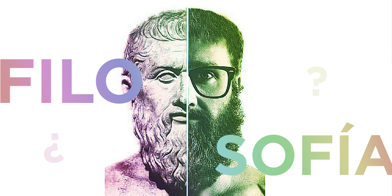
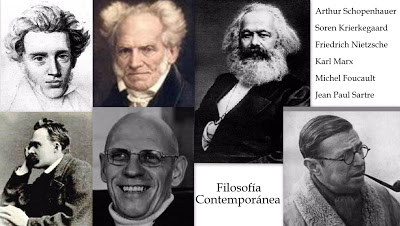

Filosofía Moderna
La filosofía moderna se define como la intención de llegar a los mismos términos de implicación intelectual para resolver problemas que surgen por la revolución científica y abarca a grandes pensadores desde la época del Renacimiento desde el siglo XIV hasta alrededor del año 1800. La filosofía moderna nace como un quiebre del pensamiento establecido en la Edad Media con la aparición de los humanistas y de los movimientos renacentistas. Continúa con el estudio detallado de los grandes representantes del pensamiento moderno: René Descartes y el estudio de su famosa frase “pienso luego existo”. Baruch Spinoza y su gran “teoría de la sustancia”, siguiendo con G. Leibniz, quien a través de su “doctrina de las mónadas” supo dar una visión completamente diferente a los pensadores de su época, Immanuel Kant. La edad moderna trajo consigo, además, el desarrollo de la gnoseología, disciplina en la cual participaron los pensadores anteriormente nombrados y muchos más, como lo fuesen David Hume y J. Locke, ambos catalogados como “empiristas”. Por ende, no solo conoceremos a fondo el pensamiento de estos filósofos modernos, sino que descubriremos de qué hablamos cuando mencionamos la palabra “racionalismo” y “empirismo”, los grandes protagonistas dentro de este periodo.
Filosofía Contemporánea

La filosofía contemporánea es el período actual de la historia de la filosofía. Por extensión, se llama también con este nombre a la filosofía producida por filósofos que aún están vivos. Es el período que sigue a la filosofía moderna, y su inicio se suele fijar a finales del siglo XIX o principios del siglo XX.
Las tradiciones filosóficas más significativas y abarcadoras del siglo XX fueron la filosofía analítica en el mundo anglosajón, y la filosofía continental en la Europa continental. El siglo XX también vio el surgimiento de nuevas corrientes filosóficas, como el positivismo lógico, la fenomenología, el existencialismo, el postestructuralismo, y el materialismo filosófico.
En este período la mayoría de los filósofos más importantes trabajaron desde las universidades, especialmente en la segunda mitad del siglo. Algunos de los temas más discutidos fueron la relación entre el lenguaje y la filosofía (este hecho a veces es llamado «el giro lingüístico»). Los principales exponentes de este «giro» fueron Martin Heidegger en la tradición continental y Ludwig Wittgenstein en la tradición analítica.